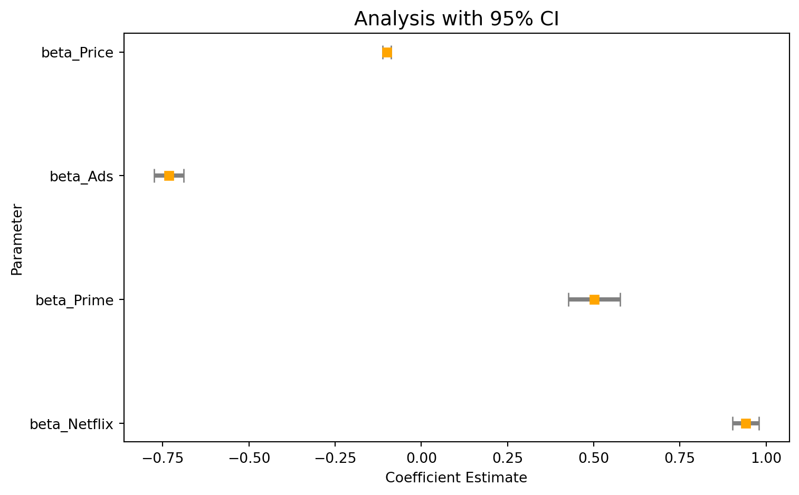
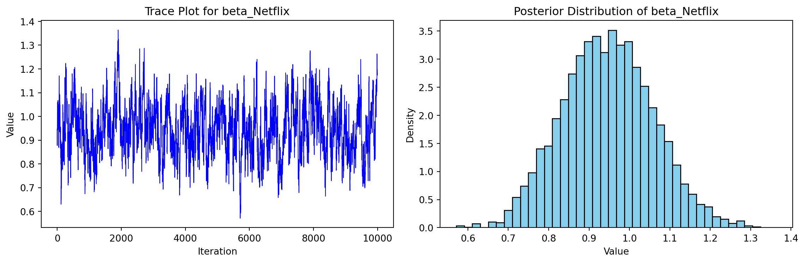

This assignment expores two methods for estimating the MNL model: (1) via Maximum Likelihood, and (2) via a Bayesian approach using a Metropolis-Hastings MCMC algorithm.
1. Likelihood for the Multi-nomial Logit (MNL) Model
Suppose we have \(i=1,\ldots,n\) consumers who each select exactly one product \(j\) from a set of \(J\) products. The outcome variable is the identity of the product chosen \(y_i \in \{1, \ldots, J\}\) or equivalently a vector of \(J-1\) zeros and \(1\) one, where the \(1\) indicates the selected product. For example, if the third product was chosen out of 3 products, then either \(y=3\) or \(y=(0,0,1)\) depending on how we want to represent it. Suppose also that we have a vector of data on each product \(x_j\) (eg, brand, price, etc.).
We model the consumer’s decision as the selection of the product that provides the most utility, and we’ll specify the utility function as a linear function of the product characteristics:
\[ U_{ij} = x_j'\beta + \epsilon_{ij} \]
where \(\epsilon_{ij}\) is an i.i.d. extreme value error term.
The choice of the i.i.d. extreme value error term leads to a closed-form expression for the probability that consumer \(i\) chooses product \(j\):
A clever way to write the individual likelihood function for consumer \(i\) is the product of the \(J\) probabilities, each raised to the power of an indicator variable (\(\delta_{ij}\)) that indicates the chosen product:
We will simulate data from a conjoint experiment about video content streaming services. We elect to simulate 100 respondents, each completing 10 choice tasks, where they choose from three alternatives per task. For simplicity, there is not a “no choice” option; each simulated respondent must select one of the 3 alternatives.
Each alternative is a hypothetical streaming offer consistent of three attributes: (1) brand is either Netflix, Amazon Prime, or Hulu; (2) ads can either be part of the experience, or it can be ad-free, and (3) price per month ranges from $4 to $32 in increments of $4.
The part-worths (ie, preference weights or beta parameters) for the attribute levels will be 1.0 for Netflix, 0.5 for Amazon Prime (with 0 for Hulu as the reference brand); -0.8 for included adverstisements (0 for ad-free); and -0.1*price so that utility to consumer \(i\) for hypothethical streaming service \(j\) is
where the variables are binary indicators and \(\varepsilon\) is Type 1 Extreme Value (ie, Gumble) distributed.
The following code provides the simulation of the conjoint data.
import numpy as npimport pandas as pdfrom itertools import product# Set seed for reproducibilitynp.random.seed(123)# Define attributesbrands = ["N", "P", "H"] ads = ["Yes", "No"]prices =list(range(8, 33, 4))# Generate all possible profilesprofiles = pd.DataFrame(list(product(brands, ads, prices)), columns=["brand", "ad", "price"])m =len(profiles)# Assign part-worth utilities (true parameters)b_util = {"N": 1.0, "P": 0.5, "H": 0.0}a_util = {"Yes": -0.8, "No": 0.0}p_util =lambda p: -0.1* p# Parameters for simulationn_peeps =100n_tasks =10n_alts =3# Function to simulate one respondent's datadef sim_one(id): data_list = []for t inrange(1, n_tasks +1):# Randomly sample 3 alternatives sampled_profiles = profiles.sample(n=n_alts).copy() sampled_profiles["resp"] =id sampled_profiles["task"] = t# Compute deterministic utility sampled_profiles["v"] = ( sampled_profiles["brand"].map(b_util) + sampled_profiles["ad"].map(a_util) + sampled_profiles["price"].apply(p_util) ).round(10)# Add Gumbel noise (Type I extreme value) sampled_profiles["e"] =-np.log(-np.log(np.random.uniform(size=n_alts))) sampled_profiles["u"] = sampled_profiles["v"] + sampled_profiles["e"]# Identify chosen alternative sampled_profiles["choice"] = (sampled_profiles["u"] == sampled_profiles["u"].max()).astype(int)# Keep only relevant columns data_list.append(sampled_profiles[["resp", "task", "brand", "ad", "price", "choice"]])return pd.concat(data_list, ignore_index=True)# Simulate data for all respondentsconjoint_data = pd.concat([sim_one(i) for i inrange(1, n_peeps +1)], ignore_index=True)# Preview the dataprint(conjoint_data.head())
resp task brand ad price choice
0 1 1 P No 32 0
1 1 1 N No 28 0
2 1 1 N No 24 1
3 1 2 H No 28 0
4 1 2 H No 8 1
3. Preparing the Data for Estimation
The “hard part” of the MNL likelihood function is organizing the data, as we need to keep track of 3 dimensions (consumer \(i\), covariate \(k\), and product \(j\)) instead of the typical 2 dimensions for cross-sectional regression models (consumer \(i\) and covariate \(k\)). The fact that each task for each respondent has the same number of alternatives (3) helps. In addition, we need to convert the categorical variables for brand and ads into binary variables.
In this analysis, we estimated a Multinomial Logit (MNL) model using simulated conjoint data on streaming service preferences. We first constructed a design matrix of product attributes—including brand (Netflix, Prime), ad presence, and price—and used consumer choice outcomes to model the probability of product selection. We then defined and maximized the MNL log-likelihood function using scipy.optimize.minimize, obtaining maximum likelihood estimates for the four key part-worth parameters. Standard errors and 95% confidence intervals were calculated using the inverse Hessian of the log-likelihood.
The table presents the estimated coefficients from the Multinomial Logit (MNL) model, capturing how different attributes of streaming services influence consumer choice. The positive coefficient for beta_Netflix (0.94) indicates a strong preference for Netflix over the baseline (Hulu), while beta_Prime (0.50) reflects a moderate preference for Amazon Prime. The negative estimate for beta_Ads (-0.73) confirms that consumers significantly dislike ad-supported plans, and beta_Price (-0.10) shows that higher prices reduce the likelihood of selection, as expected. All coefficients are statistically significant, with 95% confidence intervals that do not include zero, underscoring the robustness of these preference estimates.
These results are further visualized in the coefficient plot below. The horizontal plot provides a clear visual representation of the estimated part-worth utilities (coefficients) from the Multinomial Logit model, along with their 95% confidence intervals. Each square marker represents the point estimate for a parameter, while the horizontal lines indicate the range of values within which the true coefficient is likely to lie with 95% confidence. The plot confirms that all parameters are statistically significant, as none of the confidence intervals cross the zero line. Notably, Netflix shows the highest positive utility, indicating strong consumer preference, while Ads and Price have negative utilities, reflecting that consumers are averse to advertisements and higher prices. This visualization complements the numeric results by emphasizing both the direction and precision of the estimated effects.

5. Estimation via Bayesian Methods
In this analysis, we implemented a Metropolis-Hastings Markov Chain Monte Carlo (MCMC) sampler to estimate the posterior distribution of parameters in a Multinomial Logit (MNL) model of consumer choice. The model was based on simulated conjoint data in which respondents selected among streaming service options characterized by brand, ad presence, and price. We specified priors consistent with the guidance provided: normal priors with mean zero and standard deviation five for the binary attributes (Netflix, Prime, Ads), and a tighter normal prior with standard deviation one for the continuous price coefficient. Working in log-space, we combined the log-likelihood—previously used in the MLE estimation—with the log-prior to evaluate the log-posterior.
To approximate the posterior distribution, we ran the MCMC sampler for 11,000 iterations and discarded the first 1,000 as burn-in, retaining the last 10,000 draws for inference. The proposal distribution was set up as a multivariate normal with zero mean and a diagonal covariance matrix, where the proposal variances were tuned separately for each parameter. This allowed the sampler to explore the parameter space efficiently, even in a four-dimensional setting.
As part of the diagnostic checks, we examined the trace plot for the beta coefficient on Netflix (β_Netflix), which demonstrated good mixing and no signs of poor convergence or autocorrelation. The histogram of the posterior draws further revealed a roughly symmetric, bell-shaped distribution centered near 0.95, supporting the interpretation of a strong positive preference for Netflix. Across all four parameters, the posterior means closely aligned with the maximum likelihood estimates obtained earlier, rein_

Parameter
Posterior Mean
Posterior Std. Dev
CI Lower (2.5%)
CI Upper (97.5%)
0
beta_Netflix
0.945757
0.112710
0.732071
1.170714
1
beta_Prime
0.506718
0.113585
0.288233
0.735044
2
beta_Ads
-0.732612
0.083074
-0.890905
-0.566756
3
beta_Price
-0.099754
0.006286
-0.111863
-0.087338
The graph below displays two key diagnostic visualizations from the Metropolis-Hastings MCMC sampling of the β_Netflix parameter: a trace plot (left) and a histogram of the posterior distribution (right). The trace plot shows the sampled values of β_Netflix over 10,000 iterations (after burn-in) and reveals a well-mixed chain, with the samples fluctuating rapidly and broadly around the central region. This indicates good convergence and no signs of pathologies such as stickiness or drift, which could suggest poor exploration of the parameter space.
The posterior histogram on the right further supports this conclusion: it shows a smooth, unimodal, and approximately normal distribution centered around 0.95. The shape of the histogram reflects the likely distribution of beliefs about the true value of β_Netflix after observing the data and incorporating prior information. Taken together, the two panels confirm that the sampler performed effectively and that the estimated preference for Netflix is both strong and statistically well-identified.
Overall, the Bayesian estimation via MCMC not only confirmed the earlier MLE results—indicating preferences for Netflix and Prime, aversion to ads, and price sensitivity—but also offered a richer understanding of uncertainty through full posterior distributions. This allows for more nuanced decision-making, particularly in settings where probabilistic reasoning and uncertainty quantification are important.
6. Discussion
Interpreting Parameter Estimates
If the data were not simulated but instead derived from real consumer responses, the estimated parameters would reflect genuine underlying preferences in the sample population. In this case, the fact that β_Netflix > β_Prime implies that, holding all other attributes constant, consumers derive more utility from choosing a Netflix subscription compared to an Amazon Prime subscription. This suggests that Netflix has a stronger appeal—potentially due to perceived content quality, brand reputation, or user experience. The difference in these coefficients quantifies how much more attractive Netflix is relative to Prime, and indirectly relative to the omitted baseline (Hulu).
The sign and magnitude of β_price also provide important behavioral insights. The negative value of β_price aligns with standard economic theory, indicating that as the monthly price increases, the likelihood of a consumer selecting that option decreases. This makes intuitive sense, as higher prices typically reduce the attractiveness of a product, especially when substitutable options exist. A negative price coefficient is a hallmark of rational consumer behavior and essential for the internal validity of the model.
Together, these parameter estimates help us understand not only which attributes matter most in consumers’ decision-making but also how changes in attribute levels—such as pricing—affect the probability of a product being chosen. These insights are critical for product positioning, pricing strategy, and identifying which features drive consumer demand in a competitive market like video streaming services.
Extending to a Multi-Level (Random-Parameter) Model
To simulate data from—and estimate parameters of—a multi-level (also known as random-parameter or hierarchical) model, we would need to fundamentally alter both the data-generating process and the estimation approach to allow for heterogeneity in preferences across individuals.
In the standard multinomial logit (MNL) model, all consumers share a common set of utility coefficients (β). This implies that everyone has the same preferences, which is often unrealistic in real-world settings. In contrast, a multi-level model assumes that each individual i has their own vector of part-worth utilities, denoted β_i. These individual-level coefficients are treated as random draws from a higher-level population distribution, typically modeled as a multivariate normal distribution with a mean vector μ and covariance matrix Σ.
To simulate data from such a model, we would need to generate a unique β_i for each respondent by sampling from the population-level distribution β_i ~ N(μ, Σ). These respondent-specific coefficients would then be used to simulate choices using the same random utility model as before, but now personalized to each individual’s preferences.
On the estimation side, the likelihood function becomes more complex, as it must integrate over the distribution of β_i to account for the fact that we do not observe them directly. This typically requires Bayesian estimation techniques, such as hierarchical MCMC or Hamiltonian Monte Carlo, or frequentist approaches like simulated maximum likelihood or expectation-maximization (EM) algorithms. In practice, packages like PyStan, PyMC, or HierarchicalBayes in R are commonly used to estimate these models.
The advantage of the multi-level approach is that it provides richer insights: it not only estimates the average effect of attributes across the population, but also captures the distribution of preferences, allowing for individualized predictions and better market segmentation. This makes hierarchical models especially valuable in commercial applications of conjoint analysis where understanding consumer heterogeneity is critical.